Circuitos Secuenciales
- Secuencia de conteo binario
- Contadores asíncronos
- Contadores síncronos
- Módulo de conteo
- Máquinas de estados finitos
- Colaboradores
- Bibliografía
*** INCOMPLETO ***
Secuencia de conteo binario
Si examinamos una secuencia de conteo binario de cuatro bits de 0000 a 1111, será evidente un patrón definido en las "oscilaciones" de los bits entre 0 y 1:
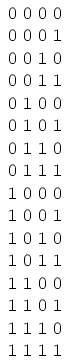
Observe cómo el bit menos significativo (LSB) alterna entre 0 y 1 en cada paso de la secuencia de conteo, mientras que cada bit siguiente alterna a la mitad de la frecuencia del anterior. El bit más significativo (MSB) solo alterna una vez durante toda la secuencia de conteo de dieciséis pasos: en la transición entre 7 (0111) y 8 (1000).
Si quisiéramos diseñar un circuito digital para "contar" en binario de cuatro bits, todo lo que tendríamos que hacer es diseñar una serie de circuitos divisores de frecuencia, cada circuito dividiendo la frecuencia de un pulso de onda cuadrada por un factor de 2:
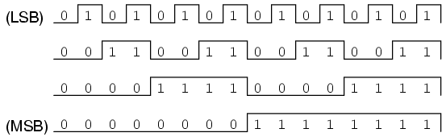
Los flip-flops J-K son ideales para esta tarea, porque tienen la capacidad de "alternar" su estado de salida al comando de un pulso de reloj cuando las entradas J y K están en "alto" (1):
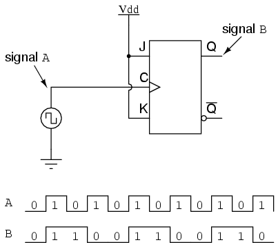
Si consideramos que las dos señales (A y B) en este circuito representan dos bits de un número binario, siendo la señal A el LSB y la señal B el MSB, vemos que la secuencia de conteo es hacia atrás: de 11 a 10 a 01 a 00 y nuevamente a 11. Aunque puede que no esté contando en la dirección que podríamos haber asumido, ¡al menos cuenta!
Las siguientes secciones exploran diferentes tipos de circuitos contadores, todos fabricados con flip-flops J-K y todos basados en la explotación del modo de operación de conmutación de ese flip-flop.
- REVISAR:
- Las secuencias de conteo binario siguen un patrón de división de frecuencia de octava: la frecuencia de oscilación de cada bit, de LSB a MSB, sigue un patrón de división por dos. En otras palabras, el LSB oscilará a la frecuencia más alta, seguido por el siguiente bit a la mitad de la frecuencia del LSB y el siguiente bit a la mitad de la frecuencia del bit anterior, etc.
- Se pueden construir circuitos que "cuenten" en una secuencia binaria, utilizando flip-flops JK configurados en el modo "alternar".
Contadores asíncronos
En la sección anterior, vimos un circuito que usaba un flip-flop J-K que contaba hacia atrás en una secuencia binaria de dos bits, de 11 a 10 a 01 a 00. Dado que sería deseable tener un circuito que pudiera contaradelanteY no sólo hacia atrás, valdría la pena examinar de nuevo una secuencia de conteo directo y buscar más patrones que pudieran indicar cómo construir dicho circuito.
Como sabemos que las secuencias de conteo binario siguen un patrón de división de frecuencia de octava (factor de 2), y que los multivibradores flip-flop J-K configurados para el modo "alternar" son capaces de realizar este tipo de división de frecuencia, podemos imaginar un circuito formado por varios flip-flops J-K, conectados en cascada para producir cuatro bits de salida. El principal problema al que nos enfrentamos es determinarhowconectar estos flip-flops entre sí para que cambien en el momento correcto para producir la secuencia binaria adecuada. Examine la siguiente secuencia de conteo binario, prestando atención a los patrones que preceden al "alternamiento" de un bit entre 0 y 1:
Tenga en cuenta que cada bit en esta secuencia de cuatro bits alterna cuando el bit anterior (el bit que tiene un menor significado o peso posicional) cambia en una dirección particular: de 1 a 0. Las flechas pequeñas indican aquellos puntos en la secuencia donde un bit alterna, la punta de la flecha apunta al bit anterior pasando de un estado "alto" (1) a un estado "bajo" (0):
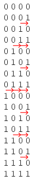
Comenzando con cuatro flip-flops J-K conectados de tal manera que siempre estén en el modo "alternar", necesitamos determinar cómo conectar las entradas de reloj de tal manera que cada bit sucesivo cambie cuando el bit anterior pase de 1 a 0. Las salidas Q de cada flip-flop servirán como los respectivos bits binarios del conteo final de cuatro bits:
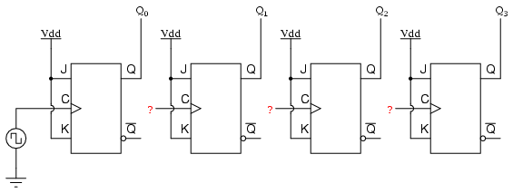
Si usáramos flip-flops con disparo de flanco negativo (símbolos de burbuja en las entradas de reloj), simplemente podríamos conectar la entrada de reloj de cada flip-flop a la salida Q del flip-flop anterior, de modo que cuando el bit anterior cambie de 1 a 0, el "flanco descendente" de esa señal "cronometraría" el siguiente flip-flop para alternar el siguiente bit:
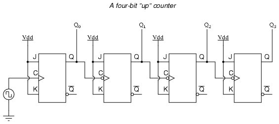
Este circuito produciría las siguientes formas de onda de salida, cuando sea "sincronizado" por una fuente repetitiva de pulsos de un oscilador:
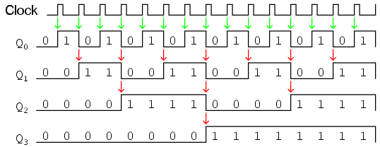
El primer flip-flop (el que tiene la Q0salida), tiene una entrada de reloj activada por flanco positivo, por lo que alterna con cada flanco ascendente de la señal de reloj. Observe cómo la señal de reloj en este ejemplo tiene un ciclo de trabajo inferior al 50%. He mostrado la señal de esta manera con el propósito de demostrar cómo la señal del reloj no necesita ser simétrica para obtener bits de salida "limpios" confiables en nuestra secuencia binaria de cuatro bits. En el primer circuito flip-flop que se muestra en este capítulo, utilicé la señal del reloj como uno de los bits de salida. Sin embargo, esta es una mala práctica en el diseño de contadores, porque requiere el uso de una señal de onda cuadrada con un ciclo de trabajo del 50% (tiempo "alto" = tiempo "bajo") para obtener una secuencia de conteo en la que todos y cada uno de los pasos se detengan durante la misma cantidad de tiempo. Sin embargo, el uso de un flip-flop J-K para cada bit de salida nos libera de la necesidad de tener una señal de reloj simétrica, lo que permite el uso de prácticamente cualquier variedad de formas de onda altas/bajas para incrementar la secuencia de conteo.
Como lo indican todas las demás flechas en el diagrama de pulsos, cada bit de salida sucesivo se alterna mediante la acción del bit anterior que pasa de "alto" (1) a "bajo" (0). Este es el patrón necesario para generar una secuencia de conteo "ascendente".
Una solución menos obvia para generar una secuencia "arriba" usando flip-flops activados por flanco positivo es "cronometrar" cada flip-flop usando la salida Q' del flip-flop anterior en lugar de la salida Q. Dado que la salida Q' siempre será exactamente el estado opuesto de la salida Q en un flip-flop J-K (no hay estados inválidos con este tipo de flip-flop), una transición de alto a bajo en la salida Q irá acompañada de una transición de bajo a alto en la salida Q'. En otras palabras, cada vez que la salida Q de un flip-flop pasa de 1 a 0, la salida Q' del mismo flip-flop pasará de 0 a 1, proporcionando el pulso de reloj positivo que necesitaríamos para alternar un flip-flop activado por flanco positivo en el momento correcto:
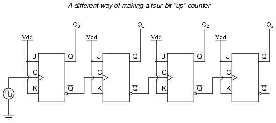
Una manera de ampliar las capacidades de cualquiera de estos dos circuitos contadores es considerar las salidas Q' como otro conjunto de cuatro bits binarios. Si examinamos el diagrama de pulsos de dicho circuito, vemos que las salidas Q' generan unabajosecuencia de conteo, mientras que las salidas Q generan unaup-secuencia de conteo:
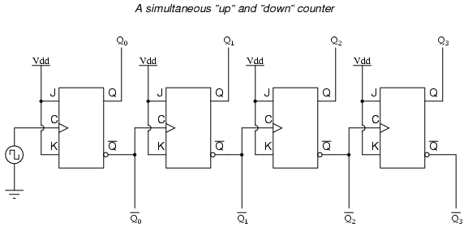
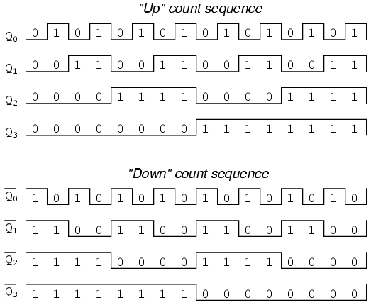
Desafortunadamente, todos los circuitos contadores mostrados hasta ahora comparten un problema común: elondaefecto. Este efecto se observa en ciertos tipos de circuitos sumadores binarios y de conversión de datos, y se debe a retrasos de propagación acumulativos entre puertas en cascada. Cuando la salida Q de un flip-flop pasa de 1 a 0, ordena al siguiente flip-flop que cambie. Si el siguiente cambio de flip-flop es una transición de 1 a 0, ordenará al flip-flop siguiente que también cambie, y así sucesivamente. Sin embargo, dado que siempre hay una pequeña cantidad de retraso de propagación entre el comando para alternar (el pulso del reloj) y la respuesta de conmutación real (las salidas Q y Q' cambian de estado), cualquier flip-flop posterior que se conmute lo hará en algún momento.despuésel primer flip-flop ha cambiado. Por lo tanto, cuando se alternan varios bits en una secuencia de conteo binario, no todos se alternarán exactamente al mismo tiempo:
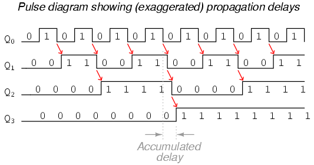
Como puede ver, cuantos más bits se alternan con un pulso de reloj determinado, más severo será el tiempo de retardo acumulado de LSB a MSB. Cuando se produce un pulso de reloj en dicho punto de transición (por ejemplo, en la transición de 0111 a 1000), los bits de salida se "ondularán" en secuencia de LSB a MSB, a medida que cada bit sucesivo alterna y ordena al siguiente bit que cambie también, con una pequeña cantidad de retraso de propagación entre cada cambio de bit. Si observamos de cerca este efecto durante la transición de 0111 a 1000, podemos ver que habráFALSOrecuentos de producción generados en el breve período de tiempo en que se produce el efecto "dominó":
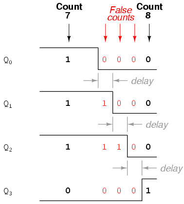
En lugar de realizar una transición limpia de una salida "0111" a una salida "1000", el circuito contador oscilará muy rápidamente de 0111 a 0110 a 0100 a 0000 a 1000, o de 7 a6 to 4 to 0y luego a 8. Este comportamiento le otorga al circuito contador el nombre decontador de ondas, ocontador asíncrono.
En muchas aplicaciones, este efecto es tolerable, ya que la onda se produce muy, muy rápidamente (la amplitud de los retrasos se ha exagerado aquí para ayudar a comprender los efectos). Si todo lo que quisiéramos hacer fuera controlar un conjunto de diodos emisores de luz (LED) con las salidas del contador, por ejemplo, esta breve onda no tendría ninguna consecuencia. Sin embargo, si quisiéramos utilizar este contador para controlar las entradas "seleccionadas" de un multiplexor, indexar un puntero de memoria en un circuito de microprocesador (computadora) o realizar alguna otra tarea donde salidas falsas pudieran causar errores falsos, no sería aceptable. Existe una forma de utilizar este tipo de circuito contador en aplicaciones sensibles a salidas falsas generadas por ondulaciones, e implica un principio conocido comoestroboscópico.
La mayoría de los circuitos decodificadores y multiplexores están equipados con al menos una entrada llamada "habilitación". Las salidas de dicho circuito estarán activas sólo cuando la entrada de habilitación se active. Podemos usar esta entrada de habilitación paraestroboscópicoel circuito que recibe la salida del contador de ondulación de modo que se deshabilite (y por lo tanto no responda a la salida del contador) durante el breve período de tiempo en el que las salidas del contador podrían estar ondulada, y se habilite solo cuando haya pasado suficiente tiempo desde el último pulso de reloj para que toda ondulación haya cesado. En la mayoría de los casos, la señal estroboscópica puede ser el mismo pulso de reloj que impulsa el circuito contador:
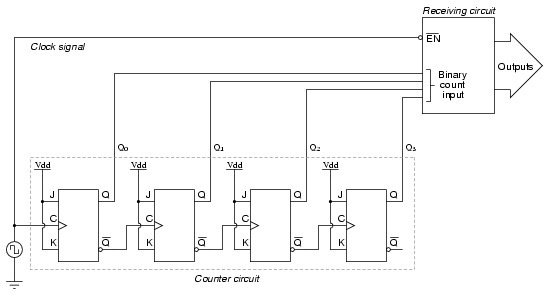
Con una entrada de habilitación activa baja, el circuito receptor responderá al conteo binario del circuito contador de cuatro bits solo cuando la señal del reloj esté "baja". Tan pronto como el pulso del reloj sube, el circuito receptor deja de responder a la salida del circuito contador. Dado que el circuito contador se activa por flanco positivo (según lo determinado por elprimeroentrada de reloj flip-flop), toda la acción de conteo tiene lugar en la transición de bajo a alto de la señal de reloj, lo que significa que el circuito receptor se desactivará justo antes de que se produzca cualquier conmutación en los cuatro bits de salida del circuito contador. El circuito receptor no se habilitará hasta que la señal del reloj vuelva a un estado bajo, lo que debería ser un tiempo suficientemente largo.despuéstodas las ondulaciones han dejado de ser "seguras" para permitir que la nueva cuenta tenga efecto en el circuito receptor. El parámetro crucial aquí es el tiempo "alto" de la señal del reloj: debe ser al menos tan largo como el período de ondulación máximo esperado del circuito contador. De lo contrario, la señal del reloj habilitará prematuramente el circuito receptor, mientras todavía se producen algunas ondulaciones.
Otra desventaja del circuito contador asíncrono u ondulado es la velocidad limitada. Si bien todos los circuitos de compuerta están limitados en términos de frecuencia máxima de la señal, el diseño de circuitos contadores asíncronos agrava este problema al hacer que los retrasos de propagación sean aditivos. Por lo tanto, incluso si se utiliza luz estroboscópica en el circuito receptor, un circuito contador asíncrono no puede sincronizarse a ninguna frecuencia superior a la que permite que transcurra el mayor retraso de propagación acumulado posible mucho antes del siguiente pulso.
La solución a este problema es un circuito contador que evite la ondulación por completo. Un circuito contador de este tipo eliminaría la necesidad de diseñar una función "estroboscópica" en cualquier circuito digital que utilice la salida del contador como entrada, y también disfrutaría de una velocidad de funcionamiento mucho mayor que su equivalente asíncrono. Este diseño de circuito contador es el tema de la siguiente sección.
- REVISAR:
- Se puede realizar un contador "ascendente" conectando las entradas de reloj de los flip-flops JK activados por flanco positivo a las salidas Q' de los flip-flops anteriores. Otra forma es utilizar flip-flops activados por flanco negativo, conectando las entradas del reloj a las salidas Q de los flip-flops anteriores. En cualquier caso, las entradas J y K de todos los flip-flops están conectadas a Vcco Vddpara estar siempre "alto".
- Los circuitos contadores hechos a partir de flip-flops J-K en cascada donde cada entrada de reloj recibe sus pulsos de la salida del flip-flop anterior invariablemente exhiben unefecto dominó, donde se generan recuentos de salida falsos entre algunos pasos de la secuencia de recuento. Estos tipos de circuitos contadores se denominancontadores asíncronos, ocontadores de ondulación.
- estroboscópicoes una técnica aplicada a circuitos que reciben la salida de un contador asíncrono (ondulación), de modo que los conteos falsos generados durante el tiempo de ondulación no tendrán ningún efecto negativo. Esencialmente, elpermitirLa entrada de dicho circuito está conectada al pulso de reloj del contador de tal manera que se habilita solo cuando las salidas del contador no están cambiando, y se deshabilitará durante aquellos períodos de cambio de salidas del contador donde se produce ondulación.
Contadores síncronos
A contador sincrónico, en contraste con uncontador asíncrono, es aquel cuyos bits de salida cambian de estado simultáneamente, sin ondulaciones. La única forma en que podemos construir un circuito contador de este tipo a partir de flip-flops JK es conectar todas las entradas de reloj juntas, de modo que todos y cada uno de los flip-flops reciban exactamente el mismo pulso de reloj exactamente al mismo tiempo:
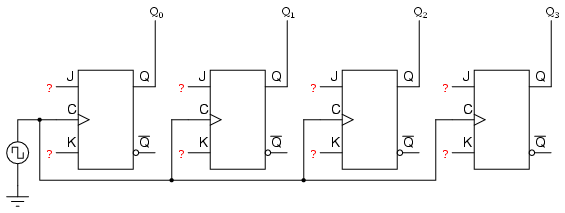
Ahora la pregunta es, ¿qué hacemos con las entradas J y K? Sabemos que todavía tenemos que mantener el mismo patrón de frecuencia de división por dos para poder contar en una secuencia binaria, y que este patrón se logra mejor utilizando el modo "alternar" del flip-flop, por lo que el hecho de que las entradas J y K deben ser (a veces) "altas" está claro. Sin embargo, si simplemente conectamos todas las entradas J y K al riel positivo de la fuente de alimentación como lo hicimos en el circuito asíncrono, esto claramente no funcionaría porque todos los flip-flops se alternarían al mismo tiempo: ¡con todos y cada uno de los pulsos de reloj!
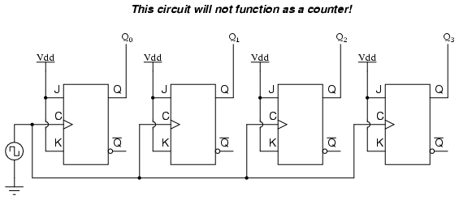
Examinemos nuevamente la secuencia de conteo binario de cuatro bits y veamos si hay otros patrones que predicen el cambio de un bit. El diseño del circuito contador asíncrono se basa en el hecho de que cada cambio de bit ocurre al mismo tiempo que el bit anterior cambia de "alto" a "bajo" (de 1 a 0). Dado que no podemos sincronizar el cambio de un bit basándose en el cambio de un bit anterior en un circuito contador síncrono (hacerlo crearía un efecto dominó), debemos encontrar algún otro patrón en la secuencia de conteo que pueda usarse para activar un cambio de bit:
Al examinar la secuencia de conteo binario de cuatro bits, se puede ver otro patrón predictivo. Observe que justo antes de que un bit cambie, todos los bits anteriores son "altos":
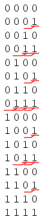
Este patrón también es algo que podemos explotar al diseñar un circuito contador. Si permitimos que cada flip-flop J-K cambie en función de si todas las salidas del flip-flop anterior (Q) son "altas" o no, podemos obtener la misma secuencia de conteo que el circuito asíncrono sin el efecto dominó, ya que cada flip-flop en este circuito se sincronizará exactamente al mismo tiempo:
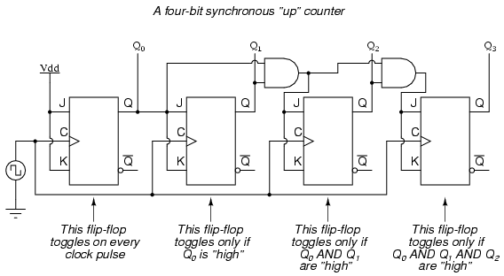
El resultado es un cuatro bits.sincrónicocontador "arriba". Cada uno de los flip-flops de orden superior está preparado para alternar (ambas entradas J y K son "altas") si las salidas Q de todos los flip-flops anteriores son "altas". De lo contrario, las entradas J y K para ese flip-flop estarán "bajas", colocándolo en el modo "latch", donde mantendrá su estado de salida actual en el siguiente pulso de reloj. Dado que el primer flip-flop (LSB) necesita alternar en cada pulso de reloj, sus entradas J y K están conectadas a Vcco Vdd, donde estarán "altos" todo el tiempo. El siguiente flip-flop sólo necesita "reconocer" que la salida Q del primer flip-flop es alta para estar listo para conmutar, por lo que no se necesita una puerta AND. Sin embargo, los flip-flops restantes deben estar listos para alternar sólo cuandoalllos bits de salida de orden inferior son "altos", de ahí la necesidad de puertas AND.
Para crear un contador "regresivo" sincrónico, necesitamos construir el circuito para reconocer los patrones de bits apropiados que predicen cada estado de conmutación durante la cuenta regresiva. No es sorprendente que, cuando examinamos la secuencia de conteo binario de cuatro bits, veamos que todos los bits anteriores están "bajos" antes de un cambio (siguiendo la secuencia de abajo hacia arriba):
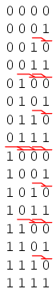
Dado que cada flip-flop J-K viene equipado con una salida Q' así como una salida Q, podemos usar las salidas Q' para habilitar el modo de conmutación en cada flip-flop sucesivo, ya que cada Q' será "alto" cada vez que el Q respectivo sea "bajo":
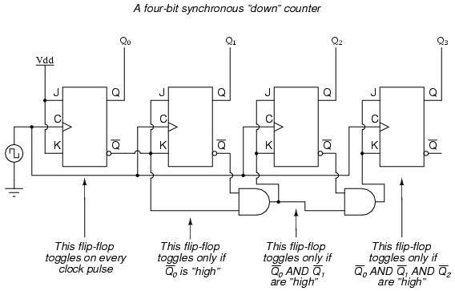
Llevando esta idea un paso más allá, podemos construir un circuito contador con modos de conteo seleccionables entre "ascendente" y "descendente" al tener líneas duales de puertas Y que detectan las condiciones de bits apropiadas para una secuencia de conteo "ascendente" y "descendente", respectivamente, luego usar puertas O para combinar las salidas de la puerta Y con las entradas J y K de cada flip-flop sucesivo:
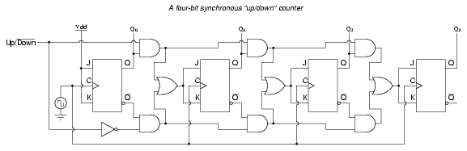
Este circuito no es tan complejo como podría parecer a primera vista. La línea de entrada de control Arriba/Abajo simplemente permite que la cadena superior o la cadena inferior de puertas AND pasen las salidas Q/Q' a las etapas sucesivas de los flip-flops. Si la línea de control Arriba/Abajo está "alta", las puertas Y superiores se habilitan y el circuito funciona exactamente igual que el primer circuito contador síncrono ("arriba") que se muestra en esta sección. Si la línea de control Arriba/Abajo se pone "baja", las puertas Y inferiores se habilitan y el circuito funciona de manera idéntica al segundo circuito ("contador descendente") que se muestra en esta sección.
Para ilustrar, aquí hay un diagrama que muestra el circuito en el modo de conteo "ascendente" (todos los circuitos deshabilitados se muestran en gris en lugar de negro):
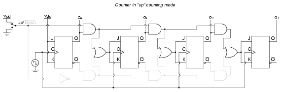
Aquí, se muestra en el modo de conteo "regresivo", con el mismo color gris que representa los circuitos deshabilitados:
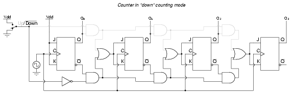
Los circuitos de contador ascendente/descendente son dispositivos muy útiles. Una aplicación común es el control de movimiento de máquinas, donde dispositivos llamadoscodificadores de eje rotativoconvierte la rotación mecánica en una serie de pulsos eléctricos, estos pulsos "cronometran" un circuito contador para rastrear el movimiento total:
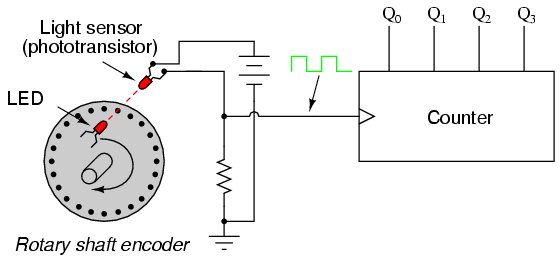
A medida que la máquina se mueve, gira el eje del codificador, generando y deshaciendo el haz de luz entre el LED y el fototransistor, generando así pulsos de reloj para incrementar el circuito contador. Así, el contador integra, o acumula, el movimiento total del eje, sirviendo como indicación electrónica de cuánto se ha movido la máquina. Si lo único que nos importa es seguir el movimiento total y no nos interesa tener en cuenta los cambios en eldirecciónde movimiento, este arreglo será suficiente. Sin embargo, si deseamos que el contadorincrementocon una dirección de movimiento ydecrementocon la dirección inversa del movimiento, debemos usar un contador ascendente/descendente y un circuito codificador/decodificador que tenga la capacidad de discriminar entre diferentes direcciones.
Si rediseñamos el codificador para que tenga dos conjuntos de pares de LED/fototransistor, esos pares se alinearán de manera que sus señales de salida de onda cuadrada sean 90odesfasados entre sí, tenemos lo que se conoce comosalida en cuadraturacodificador (la palabra "cuadratura" simplemente se refiere a un 90oseparación angular). Se puede crear un circuito de detección de fase a partir de un flip-flop tipo D, para distinguir una secuencia de pulsos en el sentido de las agujas del reloj de una secuencia de pulsos en el sentido contrario a las agujas del reloj:
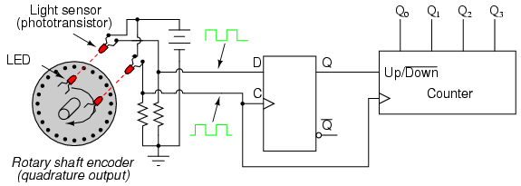
Cuando el codificador gira en el sentido de las agujas del reloj, la onda cuadrada de la señal de entrada "D" adelantará a la onda cuadrada de la entrada "C", lo que significa que la entrada "D" ya será "alta" cuando la "C" pase de "baja" a "alta", por lo tantoconfiguraciónel flip-flop tipo D (haciendo que la salida Q sea "alta") con cada pulso de reloj. Una salida Q "alta" coloca el contador en el modo de conteo "Ascendente", y cualquier pulso de reloj recibido por el reloj desde el codificador (de cualquiera de los LED) lo incrementará. Por el contrario, cuando el codificador invierte la rotación, la entrada "D" se retrasará con respecto a la forma de onda de entrada "C", lo que significa que será "baja" cuando la forma de onda "C" pase de "baja" a "alta", forzando al flip-flop tipo D a entrar en la posición "baja" a "alta".reiniciarestado (haciendo que la salida Q sea "baja") con cada pulso de reloj. Esta señal "baja" ordena al circuito contador que disminuya con cada pulso de reloj del codificador.
Este circuito, o algo muy parecido, es el núcleo de cualquier circuito de medición de posición basado en un sensor codificador de impulsos. Estas aplicaciones son muy comunes en robótica, control de máquinas herramienta CNC y otras aplicaciones que implican la medición de movimiento mecánico reversible.
Módulo de conteo
INCOMPLETO
Máquinas de estados finitos
Hasta ahora, cada circuito presentado era uncombinacionalcircuito. Eso significa que su producción depende únicamente de sus entradas actuales. Las entradas anteriores para ese tipo de circuitos no tienen efecto en la salida.
Sin embargo, existen muchas aplicaciones donde existe la necesidad de que nuestros circuitos tengan “memoria”; recordar entradas anteriores y calcular sus salidas de acuerdo con ellas. Un circuito cuya salida depende no sólo de la entrada actual sino también del historial de la entrada se llamacircuito secuencial.
En esta sección aprenderemos cómo diseñar y construir dichos circuitos secuenciales. Para ver cómo funciona este procedimiento, usaremos un ejemplo, sobre el cual estudiaremos nuestro tema.
Entonces, supongamos que tenemos un juego de preguntas digital que funciona con un reloj y lee una entrada de un botón manual. Sin embargo, queremos que el interruptor transmita solo un pulso ALTO al circuito. Si conectamos el botón directamente al circuito del juego, transmitirá ALTO durante la menor cantidad de ciclos de reloj que nuestro dedo pueda lograr. En una frecuencia de reloj común, nuestro dedo nunca puede ser lo suficientemente rápido.
El procedimiento de diseño tiene pasos específicos que se deben seguir para realizar el trabajo:
Paso 1
El primer paso del procedimiento de diseño es definir con palabras sencillas pero claras qué queremos que haga nuestro circuito:
"Nuestra misión es diseñar un circuito secundario que transmitirá un pulso ALTO con una duración de solo un ciclo cuando se presiona el botón manual, y no transmitirá otro pulso hasta que se presione el botón y se presione nuevamente".
Paso 2
El siguiente paso es diseñar un diagrama de estado. Este es un diagrama que está hecho a base de círculos y flechas y describe visualmente el funcionamiento de nuestro circuito. En términos matemáticos, este diagrama que describe el funcionamiento de nuestro circuito secuencial es una Máquina de Estados Finitos.
Tenga en cuenta que esta es una máquina de estados finitos de Moore. Su salida es función únicamente de su estado actual, no de su entrada. Esto contrasta con la máquina de estados finitos de Mealy, donde la entrada afecta la salida. En este tutorial, sólo se examinará la máquina de estados finitos de Moore.
El Diagrama de Estado de nuestro circuito es el siguiente: (Figuraa continuación)
{kind=link}
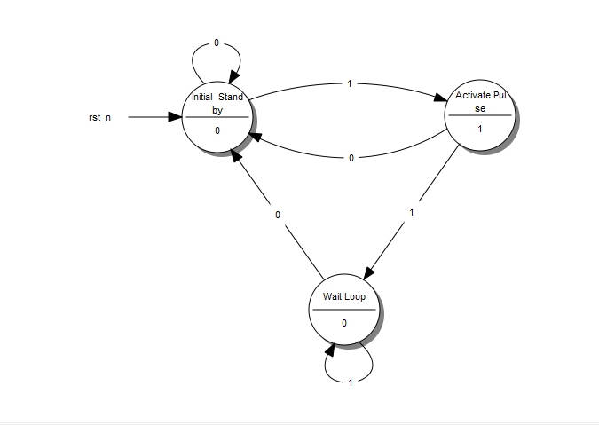
Un diagrama de estado
Cada círculo representa un "estado", una condición bien definida en la que se puede encontrar nuestra máquina.
En la mitad superior del círculo describimos esa condición. La descripción nos ayuda a recordar qué se supone que debe hacer nuestro circuito en esa condición.
- El primer círculo es la condición de "espera". Aquí es desde donde comienza nuestro circuito y donde espera que se presione otro botón.
- El segundo círculo es la condición en la que se acaba de presionar el botón y nuestro circuito necesita transmitir un pulso ALTO.
- El tercer círculo es la condición en la que nuestro circuito espera a que se suelte el botón antes de volver a la condición de "espera".
En la parte inferior del círculo está la salida de nuestro circuito. Si queremos que nuestro circuito transmita un ALTO en un estado específico, ponemos un 1 en ese estado. En caso contrario ponemos un 0.
Cada flecha representa una "transición" de un estado a otro. Una transición ocurre una vez en cada ciclo de reloj. Dependiendo de la Entrada actual, podremos pasar a un estado diferente cada vez. Observe el número en el medio de cada flecha. Esta es la entrada actual.
Por ejemplo, cuando estamos en estado "Inicial-Stand by" y "leemos" un 1, el diagrama nos indica que tenemos que pasar al estado "Activar Pulso". Si leemos un 0 debemos permanecer en el estado "Inicial-Stand by".
Entonces, ¿qué hace exactamente nuestra "Máquina"? Se parte del estado "Inicial - En espera" y espera hasta que se lee un 1 en la Entrada. Luego pasa al estado "Activar pulso" y transmite un pulso ALTO en su salida. Si se sigue presionando el botón, el circuito pasa al tercer estado, el "bucle de espera". Allí espera hasta que se suelta el botón (la entrada pasa a 0) mientras transmite un nivel BAJO en la salida. ¡Entonces todo habrá terminado otra vez!
Esta es posiblemente la parte más difícil del procedimiento de diseño, porque no se puede describir mediante pasos simples. Se necesita experiencia y un poco de pensamiento agudo para configurar un diagrama de estado, pero el resto es sólo un conjunto de pasos predeterminados.
Paso 3
A continuación, reemplazamos las palabras que describen los diferentes estados del diagrama conbinarionúmeros. Comenzamos la enumeración desde 0 que se asigna en el estado inicial. Luego continuamos la enumeración con cualquier estado que queramos, hasta que todos los estados tengan su número.
El resultado se parece a esto: (Figuraa continuación)
{kind=link}
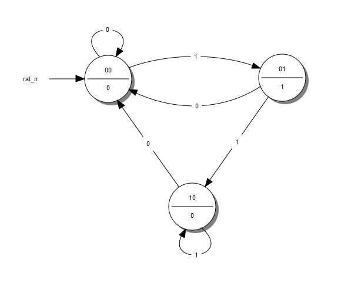
Un diagrama de estado con estados codificados
Paso 4
Después llenamos elTabla de estado. Esta tabla tiene una forma muy específica. Daré la tabla de nuestro ejemplo y la usaré para explicar cómo completarla. (Figuraa continuación)
{kind=link}
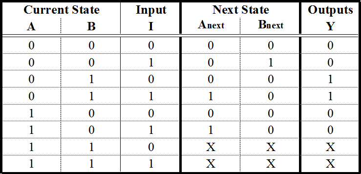
Una tabla de estado
Las primeras columnas son tantas como bits del número más alto que asignamos al Diagrama de Estado. Si tuviéramos 5 estados, habríamos usado hasta el número 100, lo que significa que usaríamos 3 columnas. Para nuestro ejemplo, usamos hasta el número 10, por lo que solo serán necesarias 2 columnas. Estas columnas describen laEstado actualde nuestro circuito.
A la derecha de las columnas Estado actual escribimos elColumnas de entrada. Estos serán tantos como nuestras variables de entrada. Nuestro ejemplo tiene solo una entrada.
A continuación, escribimos elSiguientes columnas de estado. Estas son tantas como columnas de Estado actual.
Finalmente escribimos elColumnas de salidas. Estos son tantos como nuestros resultados. Nuestro ejemplo tiene solo una salida. Dado que hemos construido una máquina de estados más finitos, la salida depende únicamente de los estados de entrada actuales. Esta es la razón por la que la columna de salidas tiene dos 1: para dar como resultado una función booleana de salida que es independiente de la entrada I. Continúe leyendo para obtener más detalles.
Las columnas Estado actual y Entrada son las Entradas de nuestra tabla. Los completamos con todos los números binarios del 0 al
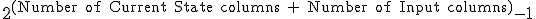
Afortunadamente, es más sencillo de lo que parece. Generalmente habrá más filas que los estados reales que hemos creado en el diagrama de estados, pero está bien.
Cada fila de las columnas de Siguiente Estado se rellena de la siguiente manera: La rellenamos con el estado al que llegamos cuando, en el Diagrama de Estado, desde el Estado Actual de la misma fila seguimos la Entrada de la misma fila. Si tenemos que completar una fila cuyo número de Estado actual no corresponde a ningún Estado real en el Diagrama de estados, la completamos con términos de No importa (X). Después de todo, no nos importa hacia dónde podemos ir desde un Estado que no existe. ¡No estaríamos allí en primer lugar! De nuevo, es más sencillo de lo que parece.
La columna de salidas se completa con la salida del estado actual correspondiente en el diagrama de estado.
¡La Tabla Estatal está completa! Describe el comportamiento de nuestro circuito tan completamente como lo hace el Diagrama de Estado.
Paso 5a
El siguiente paso es tomar esa "Máquina" teórica e implementarla en un circuito. La mayoría de las veces, esta implementación involucra Flip Flops. Esta guía está dedicada a este tipo de implementación y describirá el procedimiento tanto para D - Flip Flops como para JK - Flip Flops. T - No se incluirán las chanclas por ser demasiado similares a los dos casos anteriores.
La selección del Flip Flop a utilizar es arbitraria y normalmente está determinada por factores de coste. La mejor opción es realizar ambos análisis y decidir qué tipo de Flip Flop da como resultado un número mínimo de puertas lógicas y un menor costo.
Primero examinaremos cómo implementamos nuestra "Máquina" con D-Flip Flops.
Necesitaremos tantas D - Flip Flops como columnas de Estado, 2 en nuestro ejemplo. Por cada Flip Flop agregaremos una columna más en nuestra tabla de Estado (Figuraa continuación) con el nombre de la entrada del Flip Flop, "D" para este caso. La columna que corresponde a cada Flip Flop describequé entrada debemos darle al Flip Flop para pasar del estado actual al siguiente estado. Para el D - Flip Flop esto es fácil: la entrada necesaria es igual al siguiente estado. En las filas que contienen X, también completamos las X en esta columna.
{kind=link}
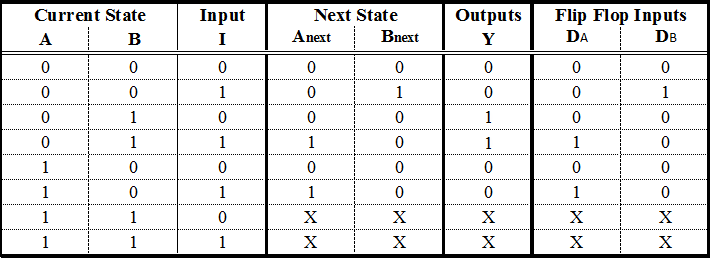
Una tabla de estados con D - Excitaciones Flip Flop
Paso 5b
Podemos hacer los mismos pasos con JK - Flip Flops. Sin embargo, existen algunas diferencias. Un JK - Flip Flop tiene dos entradas, por lo tanto necesitamos agregar dos columnas para cada Flip Flop. El contenido de cada celda está dictado por la tabla de excitación del JK: (Figuraa continuación)
{kind=link}
JK - Tabla de excitación Flip Flop
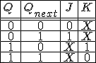
Esta tabla dice que si queremos pasar del Estado Q al Estado Qpróximo, necesitamos utilizar la entrada específica para cada terminal. Por ejemplo, para pasar de 0 a 1, necesitamos alimentar a J con 1 yno me importaqué entrada alimentamos al terminal K.
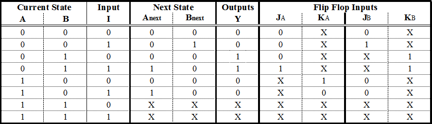
Una tabla de estado con JK - Excitaciones Flip Flop
Paso 6
Estamos en la etapa final de nuestro procedimiento. Lo que queda es determinar las funciones booleanas que producen las entradas de nuestros Flip Flops y la Salida. Extraeremos una función booleana para cada entrada de Flip Flop que tengamos. Esto se puede hacer con un mapa de Karnaugh. Las variables de entrada de este mapa son las variables de estado actual.así comolas Entradas.
Dicho esto, las funciones de entrada para nuestras D - Flip Flops son las siguientes: (Figuraa continuación)
{kind=link}
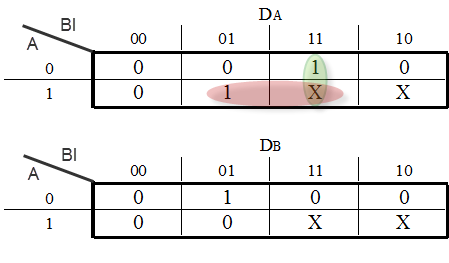
Mapas de Karnaugh para D - Entradas Flip Flop
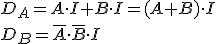
Si optamos por utilizar JK - Flip Flops nuestras funciones serían las siguientes: (Figuraa continuación)